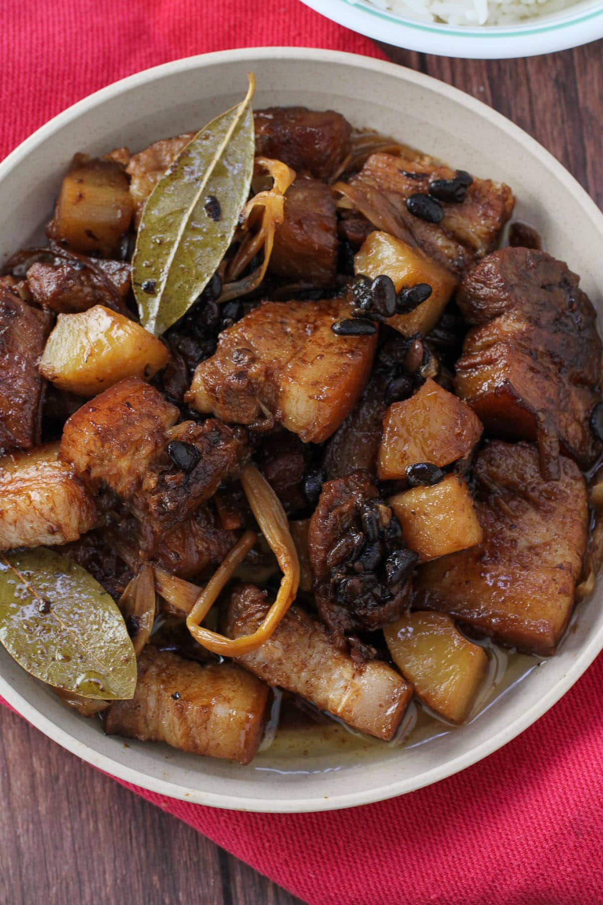
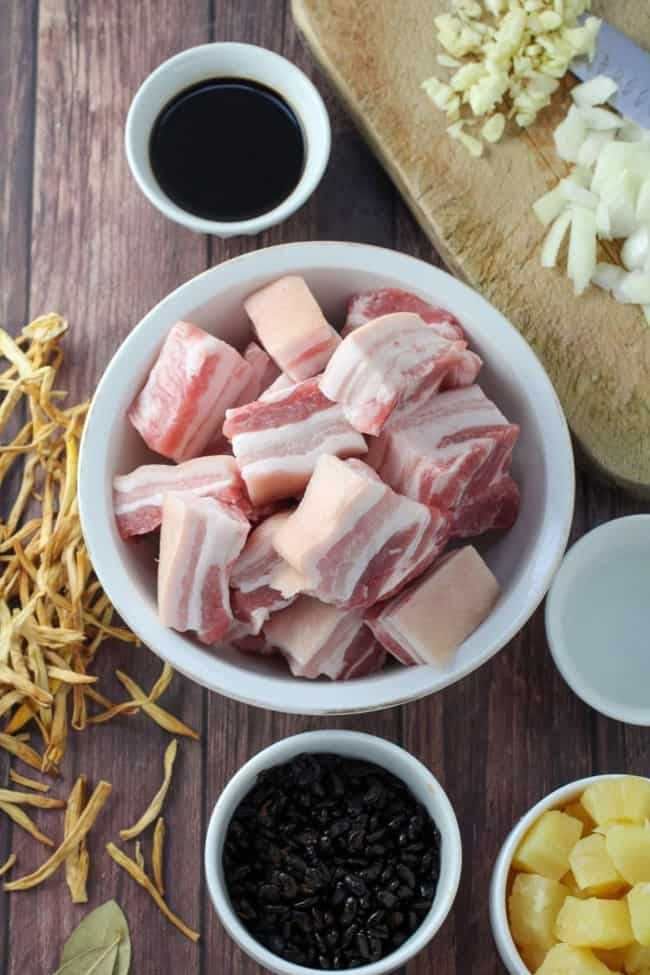
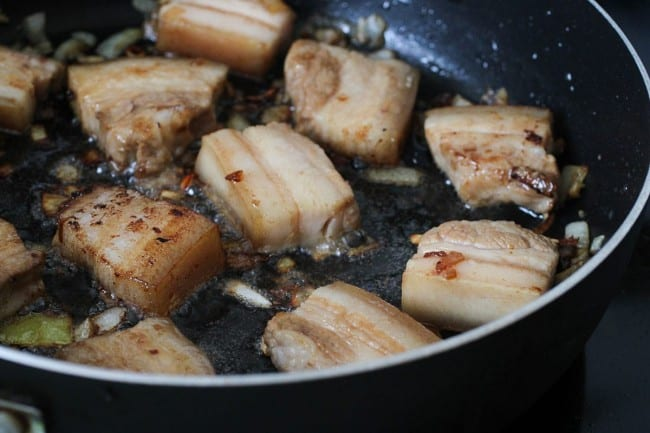
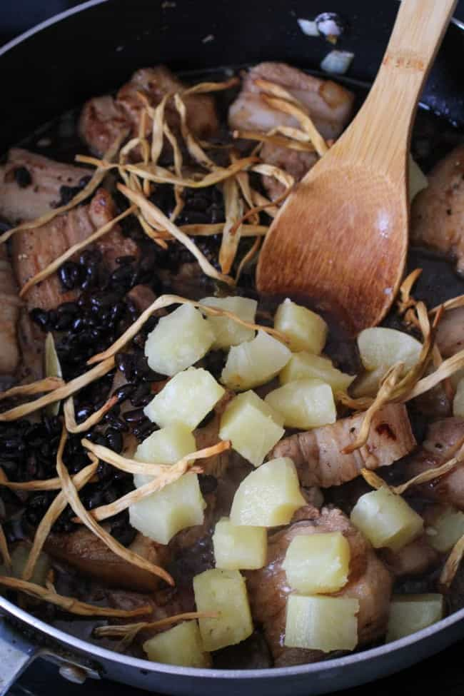
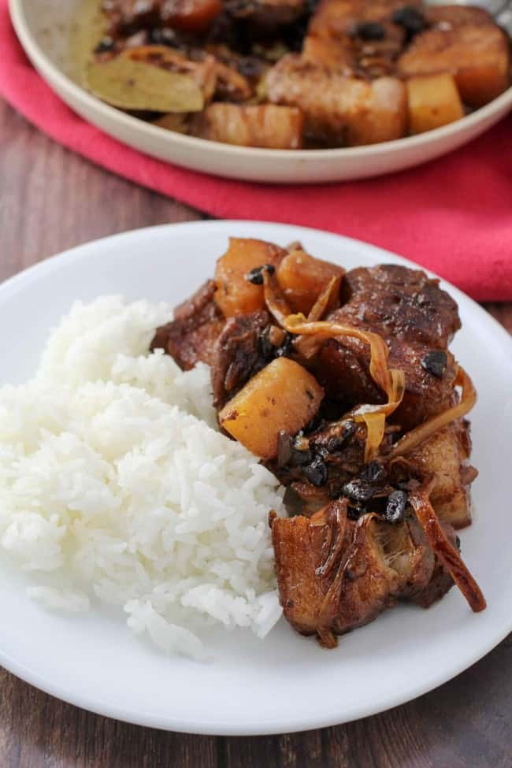

Humba Recipe

Description
Pork Humba is a delicious Visayan version of adobo with pork belly, pineapples, black beans, and dried banana blossoms. It's so easy to make and is sure to be a family favorite.
Ingredients
- 2 pounds pork belly, cut into 1-1/2 inch cubes
- 1/4 cup vinegar
- 1/2 cup soy sauce
- 1 cup pineapple juice
- 1 tablespoon oil
- 1 small onion, peeled and sliced thinly
- 6 cloves garlic, peeled and minced
- 1 teaspoon peppercorns
- 2 bay leaves
- 1 can (6 ounces) tausi (salted black beans), drained and rinsed
- 1 cup pineapple chunks
- 1 package (1 ounce) dried banana blossoms
- 1 tablespoon brown sugar
- salt to taste
Directions
- In a bowl, combine pork, vinegar, soy sauce, and pineapple juice. Marinate in the refrigerator for about 30 minutes. Drain meat from marinade, reserving liquid.

- In a wide pot over medium heat, heat oil. Add onions and garlic and cook, stirring occasionally, until limp.

- Add pork belly and cook, stirring occasionally, until lightly browned.
- Add reserved marinade and bring to a boil without stirring for about 2 to 3 minutes.
- Add peppercorns and bay leaf,
- Add tausi, pineapple chunks, and banana blossoms. Stir to combine.

- Lower heat, cover, and simmer until pork is tender.
- Add brown sugar and stir until dissolved. Season with salt to taste.
- Continue to cook until liquid is reduced and begins to render fat. Serve hot.

Enjoy!